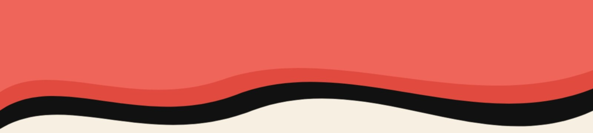
We are an international community initiative, researching, designing, developing and sharing building solutions for climate-vulnerable countries.
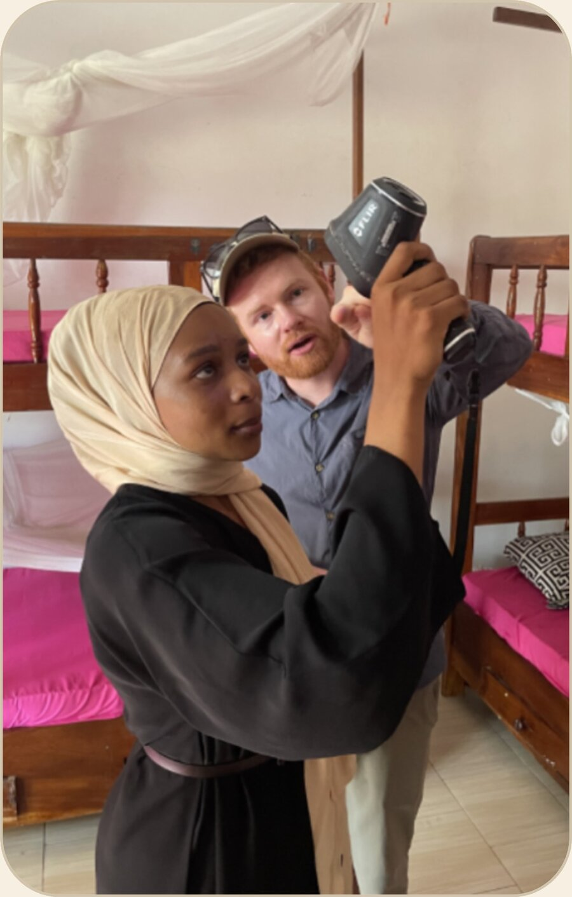
*benchmarked against international comfort standards adapted for tropical humidity.
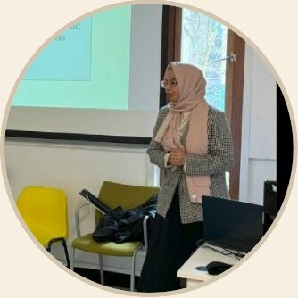
Building physics engineer and certified Passivhaus designer. I'm passionate about thermal comfort and teach at the University of Kent.
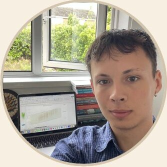
Architecture Design Studies student in Liverpool and R&D Associate at ARC.
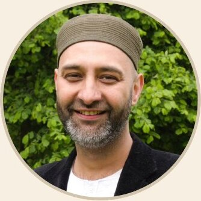
Faith-led environmentalist linking ARC's work to communities.
Building physicist specialising in moisture simulation, monitoring and analysis, as well as Passivhaus and retrofit.
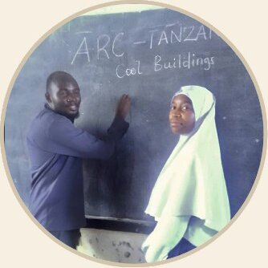
School teacher with 13 years' experience at a Vikindu state-funded secondary school, Tanzania.
Environmental policy professional from Tanzania focused on waste management, circular economy, and climate resilience.
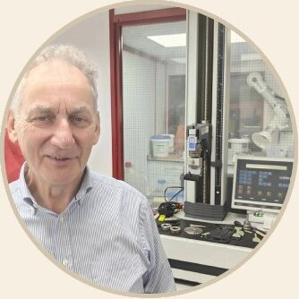
Ph.D qualified Physical Chemist working for Safeguard Europe; a company developing products to control and manage moisture problems in buildings.
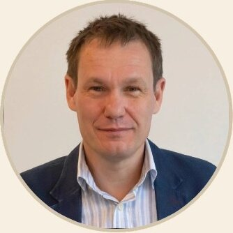
Managing Director at Safeguard Europe Ltd, where I've spent the past 30 years working on practical solutions to protect buildings from the elements.
Registered UK architect, qualified 1989. Set up ecological design/build practice Simmonds.Mills in 1992.
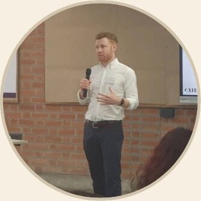
Building energy lecturer researching heat, air quality, and comfort, mainly in tropical and low-resource settings, using fieldwork and modelling.
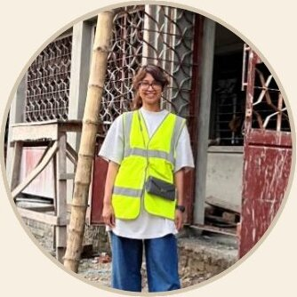
Associate Architect at AtkinsRéalis. I specialise in environmentally responsible buildings with hands-on site work in the UK and rural Bangladesh.
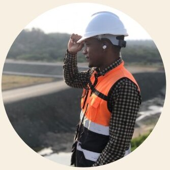
Civil & Structural Engineer specializing in building design, construction, infrastructure, and geotechnical engineering.
We started Architecture for Resilient Communities to explore and share evidence-based, practical ways to keep buildings safe and liveable as the climate heats up. We collaborate with communities, engineers, designers, builders, and environmental champions working in hot and humid regions where the conventional approach to cooling, air conditioning, is unaffordable and unreliable. ARC is developing a technical and design framework, and a Cool Buildings performance standard based on an affordable, adaptive-comfort approach. We aim to publish what we learn free of charge for all, particularly for those communities most vulnerable to climate change.
For most people in climate-vulnerable regions, reliable air conditioning is out of reach. Costly to install, costly to run, often inefficient, unhealthy and dependent on a power grid that often fails, especially during heatwaves. Designers and builders face a second problem: There is little measured data on how buildings in these climates actually perform, so they are often ‘flying blind’. Methods that were adequate a generation ago may no longer be safe in our rapidly changing climate.
The ARC Cool Buildings Standard helps designers and builders minimise overheating in hot and humid climates, for places where reaching a standard like Passivhaus in one step is unrealistic. The strategy rests on a ‘two-step’ improvement pathway, and a ‘three-zone’ room planning method: build first for natural ventilation and passive cooling, and design so that mechanical cooling, dehumidification and ventilation can be added later, room by room, as budgets allow and climate demands. Passive shading and cooling, enhanced with low-power technologies such as fans, reduce reliance on electricity for occupants' thermal safety. The standard also requires a communal heat refuge operating safely during extreme heat and power cuts.
What we learn from design and development, following monitoring and feedback, will become a free pattern library of design solutions, building-science resources and training materials, co-created with international experts and the communities who will use them.
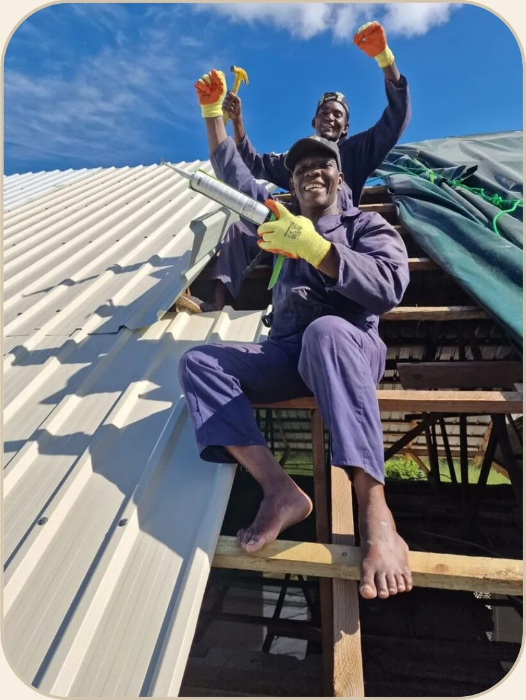
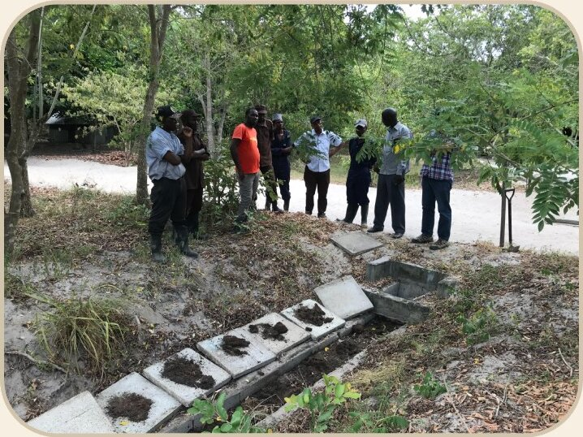
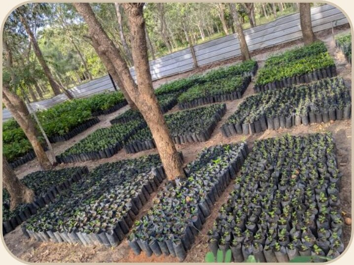
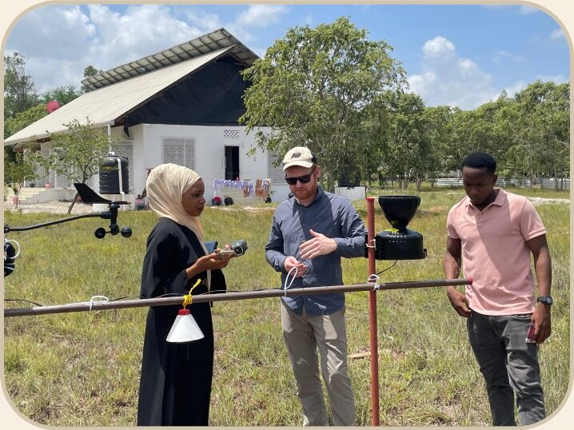
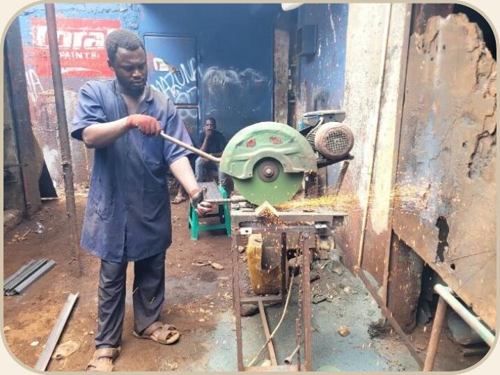
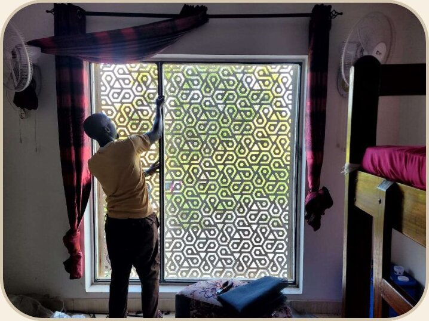
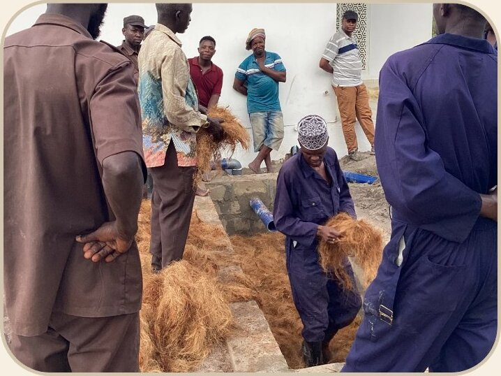
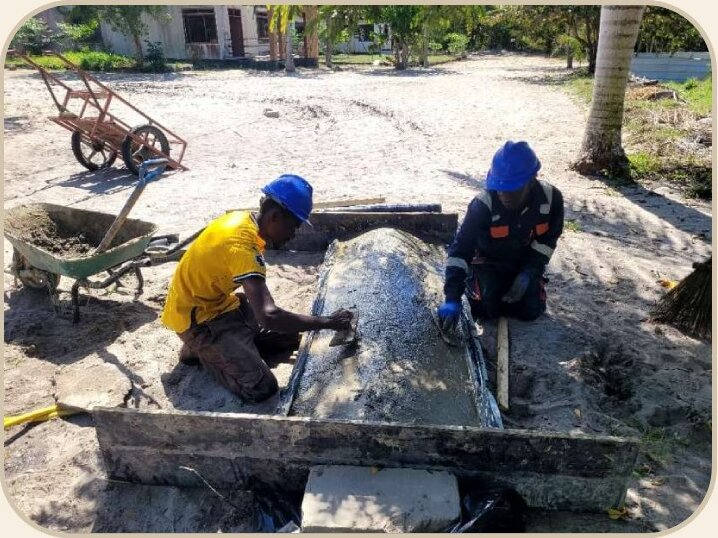
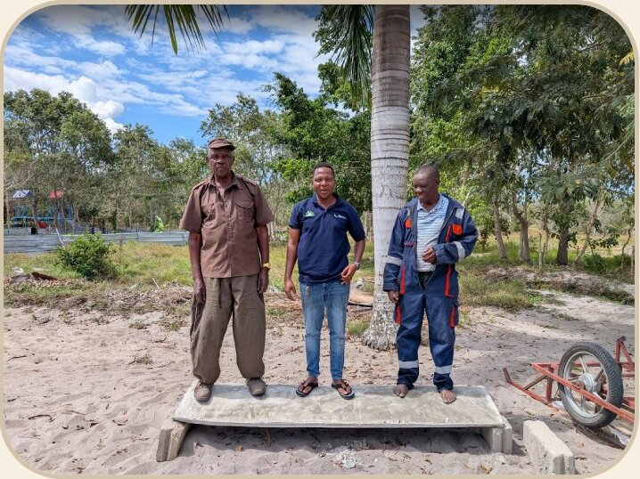
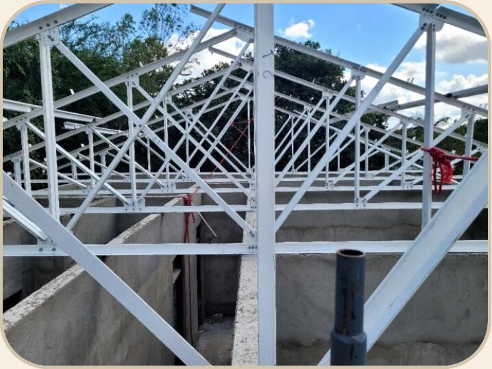
Adaptive comfort graph plotting indoor operative/air temperature for six of the rooms in House 5 in January 2024 against a weighted running mean of external temperatures. These points are plotted against an adaptive comfort band derived from a humidity-adjusted model created by Vellei et al. (2017). Assumed air speed of 0.3 m/s. See the live monitoring dashboard →
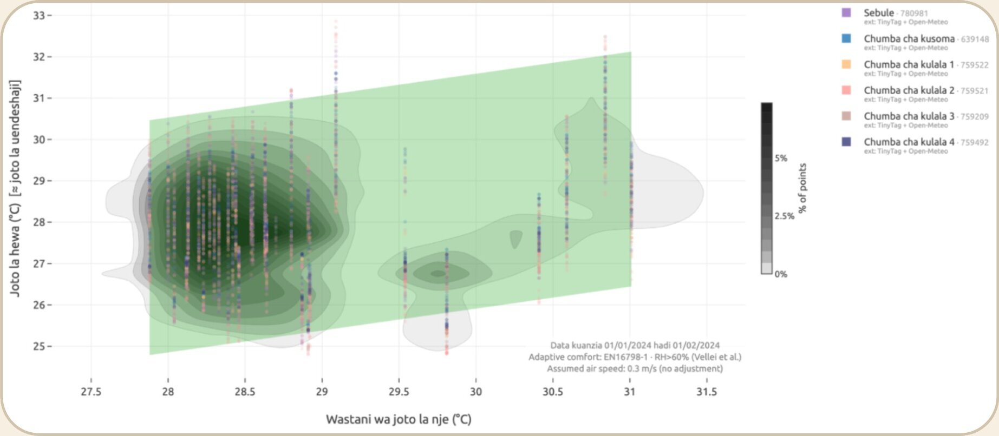
Click to enlargeMy room feels much comfortable especially the ventilation and the view. When I grow up I will build such a house. I love my house.- Girl living at the Al-Mizan Children's Ecovillage, whilst rating her current feeling as "Cold", recorded at 28°C, 75% humidity
I feel much safer in my house more than at home, I love my room mostly, because of the good weather, big windows, nice bed and fresh air.- Girl living at the Al-Mizan Children's Ecovillage
I felt good and I was in a good mood- Girl living at the Al-Mizan Children's Ecovillage, whilst rating her current feeling as "Cold", recorded at 25°C, 73% humidity
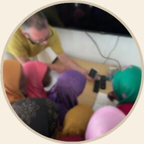
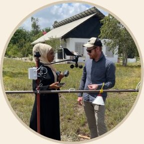
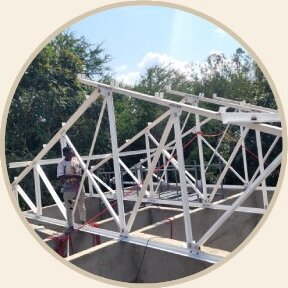
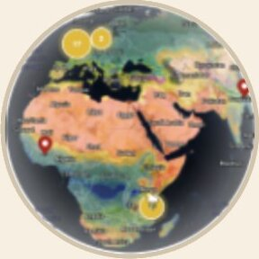
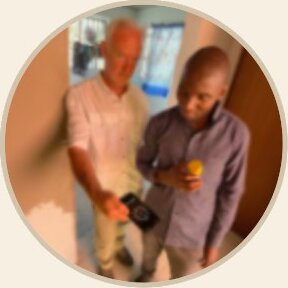
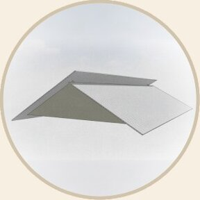
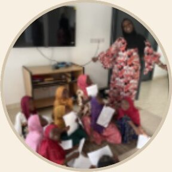
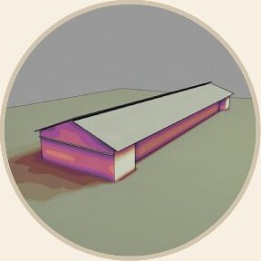
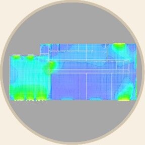
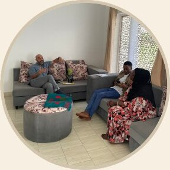
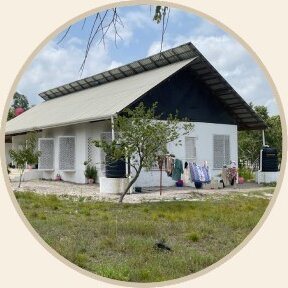
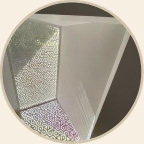
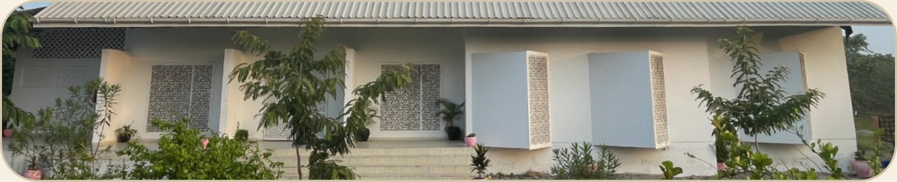
*benchmarked against international comfort standards adapted for tropical humidity.
ARC runs a small, lean team harnessing a large amount of donated expertise. Much of what ARC delivers each year comes from our advisors, giving their time and resources for free. We treat all funding we receive as unrestricted - not earmarked for specific items, and we ask supporters to trust us to allocate funds where they're needed most. In practice, that means splitting the budget two ways.
Core funding keeps ARC running, paying for networking, research, monitoring and analysis, ARC pattern design and technical development, special project development and of course basic coordination and administration activities. ARC also collaborates in live projects as test beds for its R&D, involving research and development coordination - turning monitoring data, detailed investigations, and occupant feedback into design guidance.
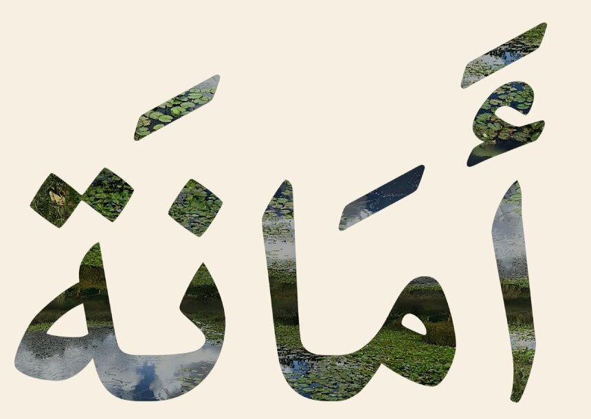
Special projects require a higher level of funding to deliver and are supported with technical direction from the ARC team as well as legal, architectural and financial support. Special projects being developed include:
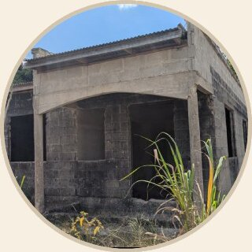
Upgrading an existing Tanzanian house to the ARC Cool Buildings Standard - to be used as a training hub, community rooms & accommodation.
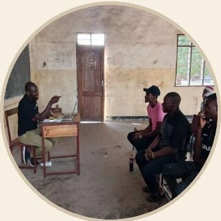
Working with local builders and their clients to co-create and evidence cool-building techniques and patterns via workshops, sharing performance data: creating mutually supportive local construction ecosystems.
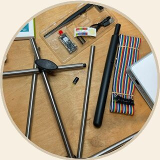
Developing a DIY kit based on affordable components, locally assembled, to measure humidity and air, surface and mean radiant temperatures.
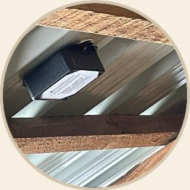
Expanding the evidence base for better building performance in hot climates and for educational use.
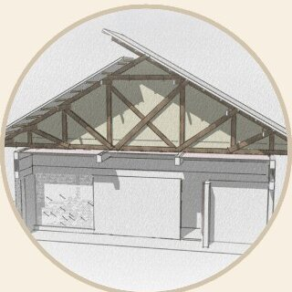
Producing proof of concept designs, components, construction assemblies and ‘ready to use patterns’ for building in hot climates.
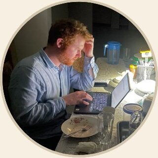
Making Cool Buildings knowledge and ARC's pattern library accessible to students, contractors and their customers - and learning easier for all.
Our sincere thanks go to the early supporters of this initiative, including the Islamic Help team and trustees, their regional office teams across Pakistan and Tanzania, and Simmonds.Mills Architects, the staff, residents, and neighbours of the Al-Mizan Children's Ecovillage in Tanzania, the AECB, and, of course, our volunteer expert advisors.
We are grateful to many people who have shared their home, their observations and their honest opinions with us, sharing their personal experiences, local knowledge and technical expertise.
Please consider supporting ARC, donations large and small are meaningful. If you'd like to donate, please visit actionresearchprojects.net/support
Support ARC →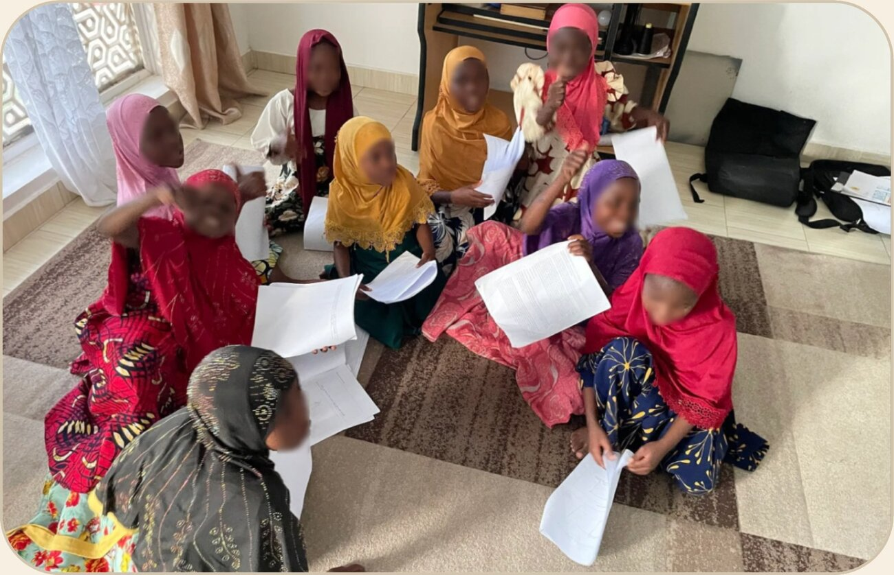
Download this as a PDF